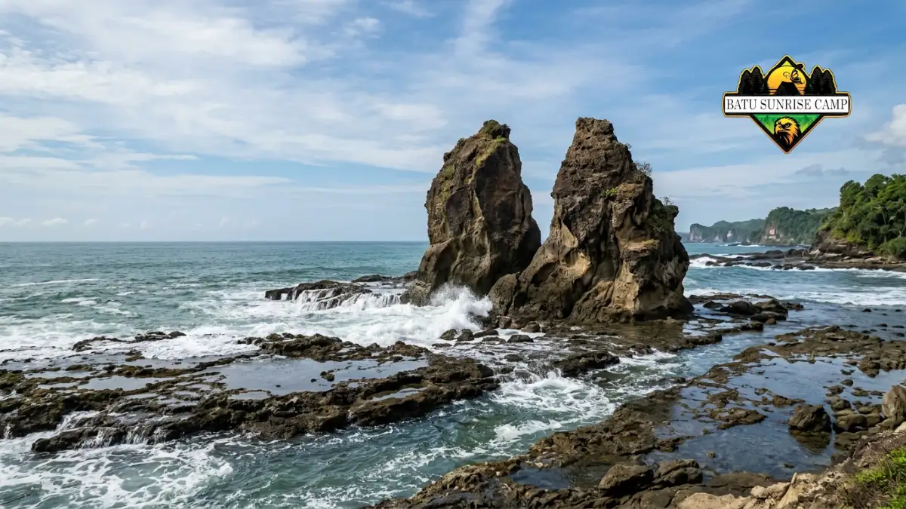

Penginapan murah di Pantai Sawarna umumnya berupa homestay dan villa sederhana dengan tarif sekitar Rp229.000 hingga Rp500.000 per malam, tergantung musim dan tipe kamar.
- Rangkuman Popmama.com mencatat tarif penginapan dekat Pantai Sawarna mulai dari Rp229.000 per malam, sedangkan pilihan bergaya camp dapat mencapai Rp1.300.000.
- Good News From Indonesia pada Mei 2026 mencatat tiket masuk kawasan Sawarna sebesar Rp5.000 per orang, sementara sumber lain mencatat Rp10.000.
- Area dekat Pantai Tanjung Layar cocok untuk wisata pantai, sedangkan area dekat jalan raya lebih mudah dijangkau mobil.
- Periksa fasilitas, ulasan terbaru, dan kebijakan pembatalan sebelum membayar kamar.
- Waspadai gelombang tinggi di pesisir selatan Lebak, terutama saat libur panjang.
Apa Itu Penginapan Murah di Pantai Sawarna?
Penginapan murah di Pantai Sawarna adalah akomodasi bertarif terjangkau di Desa Sawarna, Kecamatan Bayah, Kabupaten Lebak, Banten, yang berjarak dekat dengan pantai dan objek wisata.
Pantai Sawarna bukan satu pantai tunggal. Menurut Indonesia Travel, nama tersebut merujuk pada kawasan wisata yang terdiri atas berbagai pantai, gua, air terjun, dan perbukitan dengan garis pantai sekitar 20 kilometer. Karena kawasannya luas, akomodasi tersebar di banyak titik Desa Sawarna.
Penginapan murah di kawasan ini umumnya dipilih pelancong yang ingin memakai anggaran untuk aktivitas, bukan untuk kamar. Pembaca yang cocok mencakup backpacker, keluarga kecil, dan rombongan teman.
Kamar sederhana biasanya sudah cukup untuk istirahat dan mandi setelah seharian menjelajah pantai atau gua.
Batasannya perlu dipahami sejak awal. Fasilitas penginapan murah di Sawarna dapat lebih sederhana dibanding hotel kota, dan harga dapat naik pada musim libur.
Kelebihannya, lokasi yang dekat pantai membuat perjalanan harian menuju objek wisata menjadi lebih singkat.
Berapa Harga Penginapan Murah di Sawarna pada 2026?
Rangkuman Popmama.com menunjukkan penginapan dekat Pantai Sawarna berharga sekitar Rp229.000 sampai Rp1.300.000 per malam, dengan banyak pilihan di rentang Rp300.000 sampai Rp500.000.
Rangkuman Popmama.com tentang penginapan dekat Pantai Sawarna, yang masih dapat dibaca per November 2026, memuat delapan akomodasi dengan tarif berbeda. Beberapa contoh yang tercatat dalam rangkuman tersebut adalah sebagai berikut:
- Sawarna BimBim Seaview Homestay: Rp300.000 sampai Rp500.000 per malam.
- Sawarna Little Hula Hula: Rp300.000 sampai Rp400.000 untuk kamar standar.
- Sawarna Paradiso Cottage: Rp400.000 sampai Rp800.000 per malam.
- Kayakas Crib and Camp: Rp600.000 sampai Rp1.300.000 per malam.
Angka tersebut hanya acuan, bukan harga pasti. Tarif berubah mengikuti tanggal menginap, tipe kamar, dan kebijakan pengelola.
Bandingkan beberapa platform pemesanan, lalu hubungi pengelola untuk tanggal yang Anda pilih. Untuk menghitung total pengeluaran, Anda dapat memeriksa biaya menginap di Pantai Sawarna secara lengkap sebelum menentukan anggaran liburan.
Di Area Mana Sebaiknya Menginap di Sawarna?
Area menginap di Sawarna bergantung tujuan, misalnya dekat Pantai Tanjung Layar dan Ciantir untuk wisata pantai atau dekat jalan raya untuk akses kendaraan lebih mudah.
Pantai Tanjung Layar menjadi ikon kawasan karena sepasang batu karang raksasa menyerupai layar kapal.

Pantai Tanjung Layar dengan formasi batu karang raksasa menyerupai layar kapal menjadi daya tarik utama sekaligus rujukan area menginap favorit di Sawarna.
Menurut Good News From Indonesia pada Mei 2026, kendaraan roda empat harus diparkir di kantong parkir utama desa karena akses menuju Tanjung Layar hanya dapat dilewati motor atau berjalan kaki.
Perjalanan jalan kaki memakan waktu sekitar 30 menit melewati jalan setapak di antara pohon kelapa.
Penginapan dekat Pasir Putih Ciantir dan Tanjung Layar memudahkan Anda mengejar matahari terbit atau terbenam tanpa perjalanan jauh.
Penginapan di sekitar Jalan Raya Sawarna lebih praktis untuk membawa mobil dan barang bawaan. Rangkuman Popmama.com mencatat ada akomodasi yang beralamat di Jalan Pasir Putih Tanjung Layar, dan ada pula yang beralamat di Jalan Raya Sawarna.
Pilih area sesuai kebiasaan perjalanan Anda. Anda juga dapat membaca rute menuju penginapan di Pantai Sawarna untuk memastikan jalur kendaraan cocok dengan titik penginapan pilihan.
Apa Saja Tipe Penginapan Murah di Sawarna?
Tipe penginapan murah di Sawarna meliputi homestay keluarga, penginapan kamar standar, villa untuk rombongan, dan area camp, dengan fasilitas dan harga berbeda tiap tipe.
Homestay dan penginapan keluarga
Homestay biasanya menawarkan kamar sederhana dengan suasana kekeluargaan. Pilihan ini cocok bagi pelancong solo atau pasangan yang mengutamakan harga dan tidak membutuhkan fasilitas hotel lengkap.
Villa untuk rombongan
Villa cocok untuk rombongan karena biaya kamar dapat dibagi bersama. Sawarna Little Hula Hula, misalnya, tercatat memiliki kamar rombongan Rp800.000 sampai Rp1.100.000 dalam rangkuman Popmama.com, sehingga biaya per orang dapat menurun jika kapasitas terisi penuh.
Camp dan penginapan semi-terbuka
Penginapan bergaya camp menawarkan pengalaman dekat alam. Rentang harga Kayakas Crib and Camp yang tercatat Rp600.000 sampai Rp1.300.000 menunjukkan bahwa konsep camp tidak selalu menjadi pilihan paling murah.
Fasilitas Apa yang Perlu Dicek Sebelum Memesan?
Fasilitas yang perlu dicek pada penginapan di Sawarna meliputi jenis kamar, pendingin ruangan, air bersih, kamar mandi, parkir, jarak ke pantai, dan kebijakan pembatalan.
Pemeriksaan ini penting karena harga murah sering berarti fasilitas yang lebih terbatas. Tanyakan apakah kamar memakai kipas atau pendingin ruangan, apakah air mandi tersedia sepanjang hari, dan apakah penginapan menyediakan sarapan atau dapur bersama.
Ulasan tamu terbaru membantu memverifikasi klaim pengelola. Sebagai gambaran, Penginapan Erbysa di Sawarna memiliki rating 4,2 dari 5 berdasarkan 90 ulasan di Tiket.com, dengan ulasan terbaru bertanggal Maret 2026.
Ulasan tamu pada sebuah resort di Sawarna pada 2024 juga pernah menyebut banyak nyamuk akibat pepohonan di sekitar kamar. Detail seperti ini tidak selalu tercantum di deskripsi resmi.
Bandingkan minimal tiga penginapan dengan kriteria yang sama sebelum memutuskan. Anda dapat memakai cara memilih penginapan di Pantai Sawarna sebagai daftar periksa yang lebih rinci.
Kapan Waktu Menginap yang Lebih Hemat?
Menginap pada hari kerja di luar libur nasional umumnya lebih hemat karena permintaan kamar dan tarif kunjungan biasanya lebih rendah.
Orami pada 2024 mencatat tiket masuk Pantai Sawarna sebesar Rp5.000 pada Senin sampai Jumat dan Rp10.000 pada Sabtu, Minggu, serta hari libur nasional.
Pada Mei 2026, Good News From Indonesia mencatat tarif Rp5.000 per orang. Perbedaan angka ini menunjukkan bahwa tarif dapat berubah, sehingga Anda perlu memastikan ulang saat tiba di gerbang desa.
Musim libur panjang membuat kawasan lebih ramai. RRI Banten pada April 2025 memberitakan lonjakan wisatawan di Sawarna yang menguntungkan warga dan BUMDes.
Untuk penginapan, keramaian seperti ini umumnya mendorong kamar lebih cepat penuh dan tarif lebih tinggi.
Jika jadwal Anda fleksibel, pilih hari kerja dan pesan jauh hari. Jika harus berangkat saat libur, pesan sedini mungkin dan siapkan cadangan penginapan lain.
Berapa Biaya Tambahan di Luar Kamar?
Biaya tambahan di luar kamar mencakup tiket masuk kawasan Rp5.000 sampai Rp10.000 per orang, parkir, makan, dan tiket objek tertentu seperti Pantai Karang Bokor.
Good News From Indonesia pada Januari 2026 mencatat bahwa beberapa pantai di Sawarna memiliki pos masuk sendiri karena pengelolaannya berbeda.
Pantai Pulo Manuk dikenakan Rp10.000 dan Pantai Karang Bokor Rp20.000. Artikel yang sama menyebut peralatan seperti senter dan helm untuk telusur gua biasanya tersedia di loket masuk gua.
Parkir juga perlu dihitung. Orami pada 2024 mencatat parkir motor Rp5.000 dan parkir mobil Rp10.000. Angka ini dapat berubah, sehingga sebaiknya Anda menanyakan tarif terbaru kepada pengelola penginapan.
Terakhir, siapkan anggaran makan dan transportasi lokal. Jika berencana ke Tanjung Layar dengan motor atau berjalan kaki, pertimbangkan juga biaya sewa motor atau jasa antar dari penginapan.
Apa Kesalahan Umum Saat Memesan Penginapan Murah di Sawarna?
Kesalahan umum saat memesan penginapan di Sawarna meliputi memilih hanya dari harga, mengabaikan jarak ke pantai, tidak membaca ulasan terbaru, dan tidak memeriksa kebijakan pembatalan.
- Memilih hanya dari harga terendah tanpa memeriksa fasilitas dasar seperti air bersih dan kamar mandi.
- Tidak memeriksa lokasi sehingga penginapan ternyata jauh dari pantai yang ingin dikunjungi.
- Tidak membaca ulasan tamu yang dipublikasikan dalam beberapa bulan terakhir.
- Tidak menanyakan aturan tamu, karena sebagian akomodasi di Sawarna menerapkan ketentuan khusus, misalnya kewajiban menunjukkan dokumen pernikahan bagi pasangan.
- Datang saat libur panjang tanpa reservasi.
Bagaimana Tips Menginap yang Aman dan Hemat di Sawarna?
Tips menginap hemat di Sawarna adalah memesan lebih awal, membandingkan beberapa penginapan, berbagi kamar rombongan, dan menjaga keselamatan karena ombak pantai selatan dapat berubah sewaktu-waktu.
Untuk hemat, pesan jauh hari, bandingkan tarif di beberapa platform, dan manfaatkan kamar rombongan agar biaya terbagi. Hubungi pengelola secara langsung untuk menanyakan paket menginap atau sarapan.
Untuk aman, perhatikan peringatan cuaca. BPBD Kabupaten Lebak pada April 2025 mengimbau wisatawan agar tidak berenang di pantai saat gelombang tinggi.
Pada periode itu, Basarnas Banten menerima laporan wisatawan terseret ombak di Pantai Goa Langir, Sawarna. Patuhi arahan petugas dan jangan berenang di pantai selatan tanpa memeriksa kondisi laut.
Jaga juga kebersihan pantai dan gua. Informasi tambahan tentang kawasan tersedia di situs Pemerintah Desa Sawarna dan halaman Indonesia Travel tentang Pantai Sawarna.
Kesimpulan
Penginapan murah di Pantai Sawarna paling tepat dipilih dengan membandingkan harga, lokasi, fasilitas, dan ulasan terbaru, lalu memesan lebih awal untuk menghindari kenaikan tarif.
- Gunakan kisaran Rp229.000 sampai Rp500.000 per malam sebagai acuan awal untuk penginapan sederhana, lalu verifikasi tarif untuk tanggal Anda.
- Hitung tiket masuk, parkir, makan, dan tiket objek tertentu di luar biaya kamar.
- Pilih area sesuai tujuan, dekat Tanjung Layar untuk wisata pantai atau dekat jalan raya untuk akses mobil.
- Baca ulasan terbaru dan tanyakan aturan tamu serta kebijakan pembatalan.
- Utamakan keselamatan di pantai, terutama saat gelombang tinggi.
Informasi dalam artikel ini bersifat umum dan dapat berubah. Konfirmasikan harga dan ketentuan langsung kepada pengelola penginapan.

Pertanyaan yang sering diajukan (FAQ)